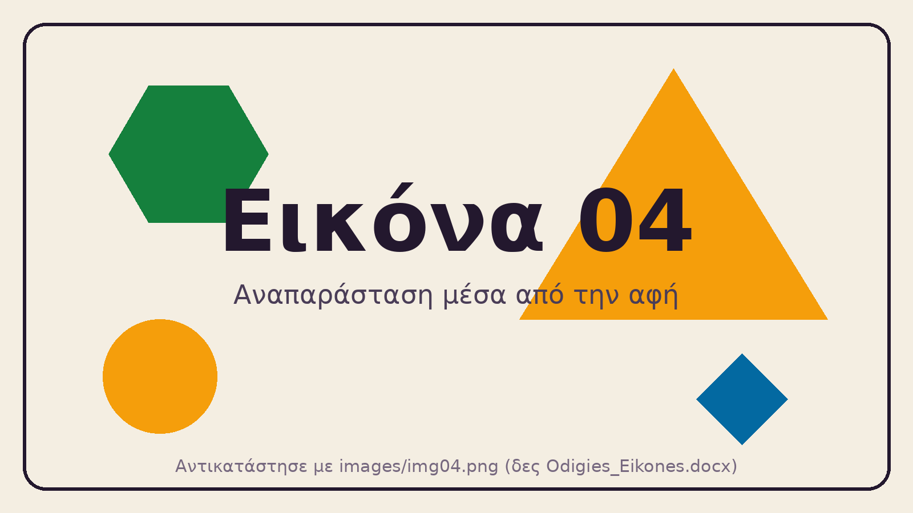

Το UDL ως αρχή σχεδιασμού δείχνει δύο πράγματα: πού το STEAM ανοίγει δρόμους για μαθητές με αναπηρία, και πού τους κλείνει.
Οι μαθητές με αναπηρία έχουν συχνά λιγότερες ευκαιρίες για ποιοτική εκπαίδευση στις φυσικές επιστήμες και στην τεχνολογία. Αυτό είναι ζήτημα ισότητας, όχι μόνο διδακτικής.
Ο χειρισμός υλικών, η εικόνα, ο ήχος, η κίνηση και η κατασκευή δίνουν περισσότερους τρόπους να μπεις σε ένα πρόβλημα και να δείξεις τι κατάλαβες.
Η εμπειρική τεκμηρίωση για STEAM ειδικά με μαθητές με αναπηρία είναι ακόμα λεπτή: μικρά δείγματα, περιγραφικές μελέτες, ασαφείς ορισμοί. Εδώ υπάρχει χώρος για χρήσιμες διπλωματικές.
| Αρχή UDL | Τι προσφέρει το STEAM | Παράδειγμα στην ειδική αγωγή |
|---|---|---|
| Εμπλοκή το γιατί | Αυθεντικό πρόβλημα, επιλογή ρόλου ή υλικού, η τέχνη ως σημείο εισόδου | Η τάξη σχεδιάζει ένα αντικείμενο που θα χρησιμοποιήσει η ίδια. Ένας μαθητής με ΔΑΦ μπαίνει μέσα από το ενδιαφέρον του για τα τρένα. |
| Αναπαράσταση το τι | Η ίδια έννοια ως φυσικό μοντέλο, εικόνα, ήχος, κίνηση, προσομοίωση | Απτά μοντέλα και ηχητική αναπαράσταση δεδομένων για μαθητές με προβλήματα όρασης. |
| Δράση και Έκφραση το πώς | Κατασκευή, σχέδιο, παράσταση, πρωτότυπο, βίντεο αντί για γραπτή απάντηση | Ένας μαθητής με δυσγραφία δείχνει την κατανόησή του με ένα λειτουργικό μοντέλο και μια προφορική εξήγηση. |

Αυτό είναι ίσως το πιο ενδιαφέρον σημείο. Το STEAM μπορεί να δημιουργήσει νέα εμπόδια. Το UDL ως φακός τα κάνει ορατά.
| Χαρακτηριστικό του STEAM | Πιθανό εμπόδιο | Αρχή UDL που το αντιμετωπίζει |
|---|---|---|
| Κατασκευές με μικρά υλικά | Λεπτή κινητικότητα (κινητική αναπηρία, δυσπραξία) | Δράση και Έκφραση · 4. Αλληλεπίδραση |
| Θορυβώδες, ανοιχτό εργαστήριο | Αισθητηριακή υπερφόρτωση (ΔΑΦ) | Εμπλοκή · 9. Συναισθηματική ικανότητα |
| Ανοιχτά, ασαφή προβλήματα | Επιβάρυνση εκτελεστικών λειτουργιών (ΔΕΠΥ, μαθησιακές δυσκολίες) | Δράση και Έκφραση · 6. Ανάπτυξη στρατηγικών |
| Ομαδική εργασία | Κοινωνική επικοινωνία (ΔΑΦ), άγχος | Εμπλοκή · 8. Διατήρηση προσπάθειας |
| Οδηγίες μόνο προφορικά ή μόνο γραπτά | Κώφωση, προβλήματα όρασης, δυσλεξία | Αναπαράσταση · 1. Αντίληψη, 2. Γλώσσα και σύμβολα |
| Οπτικά δεδομένα (γραφήματα, οθόνες) | Προβλήματα όρασης | Αναπαράσταση · 1. Αντίληψη |
Μια δραστηριότητα STEAM δεν είναι αυτόματα σχεδιασμένη κατά UDL, και η πολυτροπικότητα από μόνη της δεν εξασφαλίζει πρόσβαση. Γι' αυτό μιλάμε για «φακό»: το UDL είναι η αρχή με την οποία σχεδιάζουμε, εξετάζουμε ή αναλύουμε το STEAM, όχι ετικέτα που του κολλάμε.
Φτιάχνω ή επανασχεδιάζω ένα σενάριο STEAM με βάση τις κατευθυντήριες γραμμές και μελετώ τι συμβαίνει.
Χρησιμοποιώ τις εννέα κατευθυντήριες γραμμές ως πλαίσιο κωδικοποίησης για υπάρχοντα σενάρια ή μαθήματα.
Το UDL δίνει τις έννοιες με τις οποίες ερμηνεύω αντιλήψεις ή εμπειρίες εκπαιδευτικών και μαθητών.
Π.χ. πώς λειτουργικοποιείται το UDL στη βιβλιογραφία STEAM (ανασκόπηση).